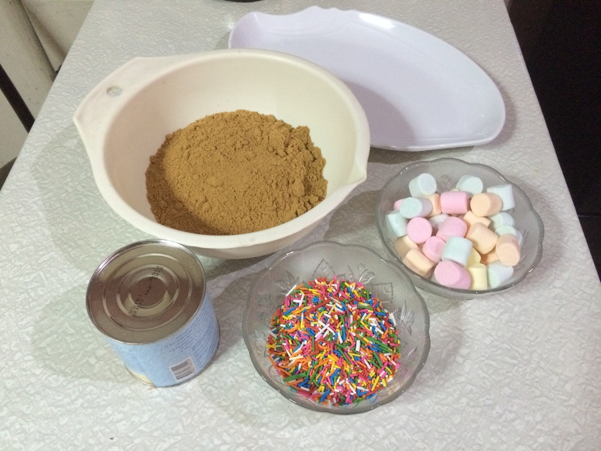

How to make Graham Balls, simplified
first things first, you will need these which are:
- 1 cup of crushed graham crackers
- 1 cup of marshmallows
- 1/2 cup of sweetened condensed milk
- 1/2 cup of sprinkles
1. Prepare the Crumbs: If you have whole graham crackers, place them in a zip-top bag and crush them finely using a rolling pin. You can also pulse them in a food processor. Set aside about ½ cup of the crumbs for rolling at the end.
2. Mix the Base: In a large mixing bowl, combine the 2 cups of graham cracker crumbs, condensed milk, and crushed nuts. Mix well using a spatula or your hands until a thick, uniform paste forms. The mixture should be moist and hold its shape when pinched.
3.Chill the Mixture: Cover the bowl and refrigerate the mixture for at least 1 hour. This crucial step makes the mixture firmer and much easier to roll.
4. Shape the Balls: Take about a tablespoon of the chilled mixture and roll it firmly between your palms to form a compact, smooth ball, about 1 inch in diameter.
5.Coat the Balls: Roll each ball in the reserved graham cracker crumbs or in desiccated coconut until fully coated. This gives them their finished look and prevents sticking.
6. Serve and Enjoy: Arrange the Graham Balls on a serving platter. They can be served immediately or chilled further in the refrigerator for a firmer texture. Enjoy your delicious homemade Graham Balls!
PT in computer RENE AND JUSTINE